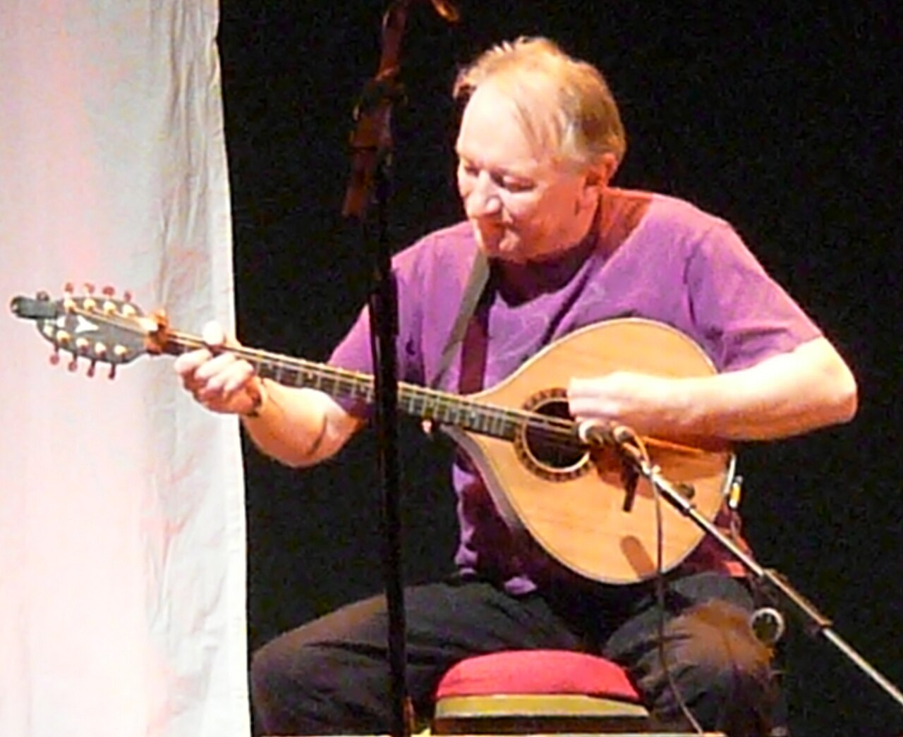

Dónal Lunny, fondateur de Planxty qui a transformé la musique traditionnelle irlandaise, meurt à 79 ans
Le joueur de bouzouki et producteur derrière Planxty, The Bothy Band et Moving Hearts est mort d'un cancer vendredi matin à l'hôpital St James de Dublin. Il avait 79 ans.

Points clés
- Dónal Lunny, le musicien et producteur qui a contribué à refaire la musique traditionnelle irlandaise pendant six décennies, est mort vendredi matin, le 23 octobre 2026, à l'hôpital St James de…
- Lunny est né le 10 mars 1947 à Tullamore, dans le comté d'Offaly, et a grandi à Newbridge, dans le comté de Kildare, où il a commencé à accompagner des musiciens traditionnels à l'âge de 15 ans.
- En 1971, Lunny a été l'un des membres fondateurs de Planxty, aux côtés de Moore, Andy Irvine et Liam O'Flynn.
Dónal Lunny, le musicien et producteur qui a contribué à refaire la musique traditionnelle irlandaise pendant six décennies, est mort vendredi matin, le 23 octobre 2026, à l'hôpital St James de Dublin. Il avait 79 ans et vivait avec un cancer. L'Irish Traditional Music Archive a partagé la nouvelle vendredi matin, et le Conseil des arts d'Irlande ainsi qu'Aosdána, l'académie nationale des artistes, ont confirmé son décès dans un communiqué publié le même jour.
Lunny est né le 10 mars 1947 à Tullamore, dans le comté d'Offaly, et a grandi à Newbridge, dans le comté de Kildare, où il a commencé à accompagner des musiciens traditionnels à l'âge de 15 ans. L'un de ses camarades d'école à Newbridge était Christy Moore, devenu son plus proche collaborateur. Adolescents, ils ont joué dans un trio, les Rakes of Kildare, avec Frank, le frère aîné de Lunny. Lunny a étudié au National College of Art and Design de Dublin de 1965 à 1968. En 1968, il a touché un public plus large avec le groupe vocal Emmet Spiceland, dont le single Mary from Dungloe est arrivé numéro un en Irlande.
Les groupes qui ont changé le son
En 1971, Lunny a été l'un des membres fondateurs de Planxty, aux côtés de Moore, Andy Irvine et Liam O'Flynn. Le groupe a donné de nouveaux arrangements aux chansons et airs traditionnels et a atteint un public bien au delà du circuit folk, avec des albums comme The Well Below the Valley et Cold Blow and the Rainy Night. Lunny a joué sur tous les enregistrements de Planxty. C'est le musicien auquel on attribue le plus souvent d'avoir fait du bouzouki un instrument standard de la musique irlandaise, après qu'Irvine lui en a offert un et qu'il a fait construire une version à dos plat selon son propre dessin.
En 1975, il a rejoint The Bothy Band, puis il a formé Moving Hearts avec d'anciens compagnons de Planxty, un groupe qui a mêlé musique traditionnelle et rythmes rock sur des albums comme Dark End of the Street et The Storm. Ses groupes suivants ont inclus Coolfin, Mozaik, LAPD et Usher's Island. Dans tous ces groupes, son jeu et ses arrangements ont ouvert de nouvelles possibilités harmoniques et rythmiques dans la tradition, comme l'a écrit l'Irish Traditional Music Archive dans son hommage.
Un producteur que les musiciens appelaient en premier
Lunny a aussi bâti une seconde carrière en studio. Il a cofondé Mulligan Records et produit 17 albums pour le label. Comme producteur et musicien, il a travaillé avec Kate Bush, Mark Knopfler, Clannad, Baaba Maal, Paul Brady, Elvis Costello et Sinéad O'Connor, avec laquelle il a eu un fils, Shane, mort en 2022 à l'âge de 17 ans. Il a composé pour la scène et l'écran, dont les bandes originales de Eat the Peach en 1985 et This Is My Father en 1997, ainsi que la musique du générique des séries télévisées Bringing It All Back Home et River of Sound.
Il a remporté le prix IRMA du producteur de l'année en 1996 et le National Entertainment Award en 1998. Il a été élu à Aosdána en 2006 et a reçu un doctorat honorifique en musique du Trinity College de Dublin en 2008. En 2025, il a reçu le prix pour l'ensemble de sa carrière aux RTÉ Radio 1 Folk Awards, remis par Moore, qui a dit connaître Lunny depuis 66 ans. En janvier 2026, il est devenu le premier artiste intronisé au Trad Music Hall of Fame du Late Late Show.
Hommages
Shona McCarthy, directrice du Conseil des arts, a déclaré que la défense de la musique traditionnelle irlandaise par Lunny avait été décisive pour mettre cet art au premier plan, et l'a qualifié de pionnier qui a inspiré des générations de musiciens. Peter Sirr, au nom des membres d'Aosdána, a dit que son travail avait été au centre de la renaissance de la musique irlandaise au cours des dernières décennies. La présentatrice Miriam O'Callaghan l'a qualifié de génie musical et d'homme magnifique. Le producteur Philip King l'a appelé le Quincy Jones des producteurs irlandais.
Chronologie
- Mar 10, 1947Dónal Lunny naît à Tullamore, dans le comté d'Offaly, et grandit à Newbridge, dans le comté de Kildare.
- 1968Son groupe Emmet Spiceland porte le single Mary from Dungloe à la première place en Irlande.
- 1971Lunny cofonde Planxty avec Christy Moore, Andy Irvine et Liam O'Flynn.
- 1975Il rejoint The Bothy Band ; il forme plus tard Moving Hearts avec d'anciens compagnons de Planxty.
- 2006Lunny est élu à Aosdána, l'académie nationale des artistes d'Irlande.
- 2025Il reçoit le prix pour l'ensemble de sa carrière aux RTÉ Radio 1 Folk Awards, remis par Christy Moore.
- Oct 23, 2026Lunny meurt d'un cancer à l'hôpital St James de Dublin, à l'âge de 79 ans.